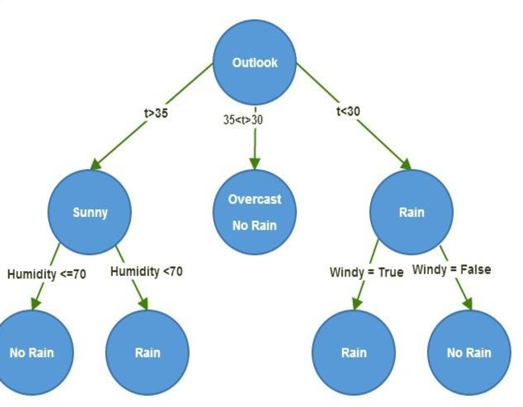
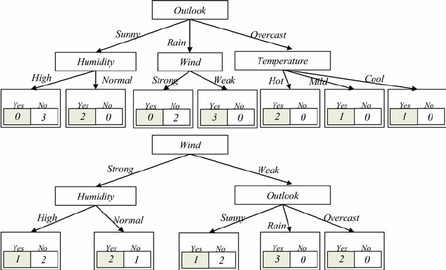
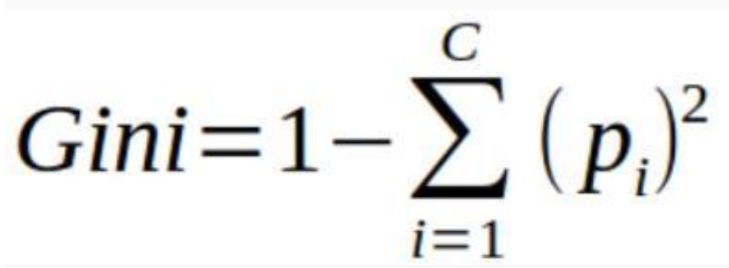
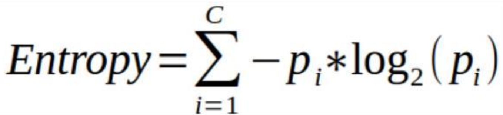
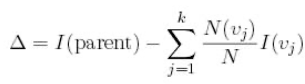
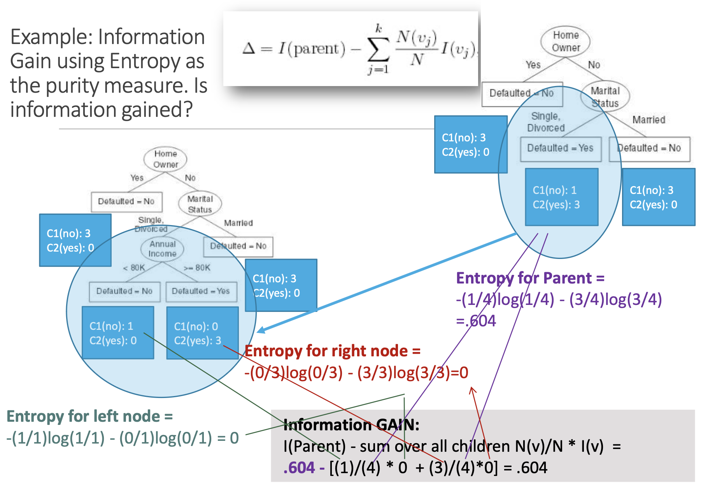

DECISION TREES
OVERVIEW:
Decision Trees are a popular supervised learning algorithm used for both classification and regression tasks in machine learning. They recursively partition the feature space into smaller regions based on feature values, ultimately resulting in a tree-like structure. It requires labeled data.
The tree has:
- Root Node: No incoming edges and zero or more outgoing edges. It contains attribute test condition(s). It is an impure node.
- Internal Node: Exactly ONE incoming edge and TWO or more outgoing. It contains attribute test condition(s). It is an impure node.
- Leaf/Terminal Node: ONE incoming, no outgoing. Each leaf node is assigned a class label. It is a pure node i.e, no impurity.
Building Decision Trees:
There are an infinite number of possible decision trees that can be constructed from a set of features as we can start with any feature as the root node.
Finding the optimal tree is an intractable problem as the search space is exponential. Algorithms can find “good” decision trees using the Greedy Top-Down approach they make a series of locally optimal decisions.
Example: Hunt's Algorithm
Hunt's is the basis of ID3, C4.5, and CART
Metrics Used in Decision Tree Splitting:
The below metrics provide a quantitative measure of impurity or uncertainty within a dataset. This impurity reflects the degree of disorder in the data, with higher values indicating greater disorder. These metrics help determine the optimal feature and split point for partitioning the data at each node of the decision tree. By evaluating the impurity reduction achieved by different splits, decision trees can recursively create partitions that result in more homogeneous subsets of data.
- Gini Index:
- Entropy:
- Information Gain:
It measures the probability for a random instance being misclassified when choosen randomly. It ranges from 0 (pure node) to 0.5 (maximum impurity).
It measures the uncertainity or impurity in a node. It is calculated using the probability distribution of the classes in the node. Entropy ranges from 0 (pure node) to 1 (maximum impurity).
It is used to determine the strength of a partition i.e., to compare purity of parent node (before split) to child nodes (after split). Mathematically it is measure of the difference between impurity values before splitting the data at a node and the weighted average of the impurity after the split.The greater the difference – the better the partition condition.
The Gain (∆) is a measure for goodness of split.
where,
I is the impurity measure of a node (such as GINI or Entropy)
N is the number of records/vectors/rows at parent node
k is the number of attribute values (variable options)
N(vj) is the number of records in child vj.
Depending on which impurity measurement is used, tree classification results can vary. There is no one preferred approach by different Decision Tree algorithms.
Example: CART uses Gini; ID3 and C4.5 use Entropy.
Calculation:
PLAN
- Load the cleaned Denver weather dataset, preprocess it to label weather descriptions, convert features into factor type, and filter data for Denver only.
- Split the dataset into training and testing sets using stratified sampling to ensure proportional representation of each class in both sets.
- Train Decision Tree Classifier models with different criteria and splitter combinations, evaluate accuracy, and generate confusion matrices.
- Visualize the decision trees and plot their confusion matrices.
- Analyze feature importance to understand which features are most relevant for weather prediction.
DATA PREPARATION
R(rpart) can perform Decision Tree on mixed labeled data (quantitative and qualitative) whereas in Python (Sklearn), data must be quantitative and labeled.
- Before Transformation:
- After Filtering Denver Data:
- After Transformation (Python):
- After Transformation (R):
- Splitting data into Train and Test set (Python):
- Checking the balance of the Train and Test set (Python):
- Splitting data into Train and Test set (R):
- Checking the balance of the Train and Test set (R):
- Classification Dataset:
The below image shows the sample of data before transformation.

The below image shows the data after filtering city by Denver.

The below image shows the data after after After labelling (clear/not clear) the data for classification and changing its type to Category.

The below image shows the labelling (clear/not clear) the data for classification and changing its type to Factor.

The below image shows train and test data created using stratified sampling to ensure that each class is represented proportionally in both sets. Train and test sets are disjoint to ensure that the model is evaluated on data it hasn't seen during training, enabling an unbiased assessment of its performance.

The below image shows the distribution of labels in the Train and Test set. They are well balanced.

The below image shows train and test data created using Random sample without replacement. Train and test sets are disjoint to ensure that the model is evaluated on data it hasn't seen during training, enabling an unbiased assessment of its performance.

The below image shows the distribution of labels in the Train and Test set. They are well balanced.

CODE
- Decision Tree (Python):
- Decision Tree (R):
RESULTS
- Accuracy (Python):
- Confusion Matrix (Python):
- Tree Viz. (Python):
- entropy criterion and best splitter:
- entropy criterion and random splitter:
- gini criterion and best splitter:
- gini criterion and random splitter:
- CP plot (R):
- Accuracy and Confusion Matrix (R):
- Tree Viz. (R):
The above image displays accuracy of 4 different trees. Decision Tree with entropy criterion and best splitter achieved highest accuracy of 67.79%.
1. entropy criterion and best splitter 2. entropy criterion and random splitter 3. gini criterion and best splitter 4. gini criterion and random splitter.
The above images displays confusion matrix of 4 different trees.
The below links are the Tree visualization for 4 different trees.
The above image displays CP plot.
The x-axis represents the complexity parameter (CP) values. Each point on the x-axis corresponds to a particular level of complexity parameter.
The y-axis represents the cross-validated error rate associated with each complexity parameter value.
The goal is to choose a CP value that results in a decision tree model with sufficient pruning to avoid overfitting, while still retaining good predictive performance on new data.
The small cp the larger the tree if cp is too small you have overfitting. So, choosing cp as 0.092
Where,
CP: Complexity parameter values.
nsplit: Number of splits in the tree.
rel error: It is the error rate relative to the root node (1.000 represents the error rate at the root node).
xerror:It is the Cross-validated error rate, which estimates the error rate of the tree on unseen data using cross-validation.
xstd: Standard error of the cross-validated error rate.


1. Decision tree with gini criterion (defualt) 2. Decision tree with gini criterion (defualt) and cp = 0.092 3. Decision tree with entropy criterion and cp = 0.092.
The above images displays accuracy and confusion matrix of 3 different trees. Decision Tree with gini criterion has achieved highest accuracy of 67.98%.
1. Decision tree with gini criterion (defualt) 2. Decision tree with gini criterion (defualt) and cp = 0.092 3. Decision tree with entropy criterion and cp = 0.092.
The above images are the Tree visualization for 3 different trees. The small cp the larger the tree if cp is too small you have overfitting.
CONCLUSION
The analysis of decision trees provided us with some fascinating insights into how we can classify weather patterns effectively. By delving into the decision paths within the tree, we gained a clearer understanding of how various weather features contribute to classification outcomes. This allowed us to identify which factors have the most significant influence on determining whether the weather is clear or not. Visualizing the structure of the decision tree made it easier to see the critical decision points and how they affect the final classification. Additionally, comparing decision trees trained with different criteria and splitters gave us valuable information about the predictive accuracy and the importance of different features. These findings deepen our understanding of weather prediction and could have important implications for a range of applications, from urban planning to disaster management. In essence, the decision tree analysis offers us a powerful tool for making sense of complex weather data and extracting actionable insights that can inform decision-making.